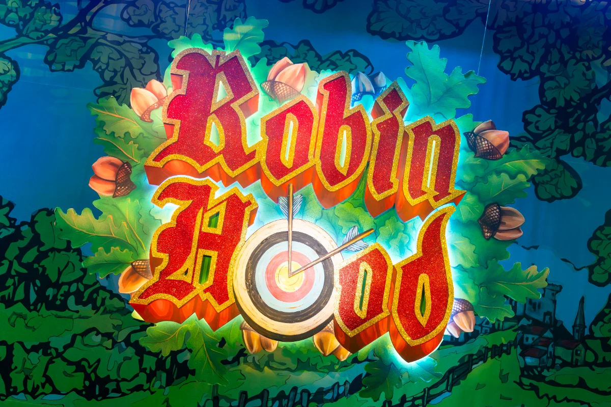

Our Family Verdict
We had the best time watching Robin Hood at Lichfield Garrick.
We absolutely loved the show, from start to finish the kids were laughing uncontrollably and joining in the chaos.
By the final bows, my cheeks genuinely hurt from smiling and laughing so much. This pantomime is pure joy and silliness for all the family.
If you're looking for wholesome family entertainment this festive season, then look no further. This is a five-star pantomime packed with magic, mischief and mayhem.
There's something so special about watching your children’s excitement as they shout ‘Behind you!’ as ghosts appear, hearing them giggle hysterically as chaos ensues across the stage and watching them search under their seats, being completely swept up in the magic.
It's those beautiful moments that make family theatre so special and the same memories and jokes the children will talk about until Spring! We thoroughly enjoyed every silly aspect pantomimes are known and loved for.
Seeing the children’s excitement is just as enjoyable as watching the show itself, and what a show it was!
What I particularly love about the Garrick panto is that it's genuine family entertainment. It doesn't rely on adult humour, innuendo or jokes that go over the children's heads to keep the grown-ups entertained. Instead, it manages to engage every generation through clever comedy, silliness, music, audience participation and plenty of festive magic. It's wholesome, inclusive family fun. The children get all the jokes, the adults get to enjoy the comedy, and everyone gets to share in the laughter.
It's a small cast, but a big show!
With a fantastic ensemble and some brilliant performances throughout. You can genuinely see how much the cast love what they do, and that energy is infectious. There are some fabulous vocal performances and plenty of musical surprises.
Ben Thornton as Robin Hood leads the laughter, with partner in comedy Ben Stock as Nurse Nellie. They are simply brilliant to watch and their impromptu off script moments make it all the better!
Rosie Napper plays Morgana and her villainous character and voice was absolutely brilliant. Vocally she carries much of the show, delivering some big vocal performances, and her wicked moments are a real treat. She was Charlotte's favourite character.
Then we have the boyband squirrels,(obviously!) complete with their 90s gilets! Their performance of I Want It That Way by the Backstreet Boys was absolutely fantastic. Who knew Sherwood Forest had such a talented boyband?! It resulted in several singalongs on the drive home, and I suspect we'll be hearing it for quite some time yet!
Meanwhile, a rock and roll Sheriff brings a whole different energy to the castle, with a hint of the Prince of Darkness himself, Ozzy and a questionable Brummie accents from the guard deserve a special mention too.
One of the things we particularly loved was the music. There were so many familiar tunes, expertly edited and cleverly adapted to fit the pantomime, with some hilarious lyrical twists along the way. From When You're a Baddie, Defying Gravity, I Want It That Way and I Need a Hero to Ghostbusters and Rockin' Robin, there were musical surprises throughout.
It's that clever use of familiar songs, with unexpected panto lyrics, that makes them so entertaining.
A special mention must also go to the musicians, Uncle Gary (Gary Jerry), Alex Maxted and Liam Stevenson, who are fabulous and bring so much to the production.
The eagerly awaited return of the ghost bench was another highlight. It's one of those classic panto moments that children remember and look forward to.
Audience participation is an absolute must in this production, and be warned, if you're a handsome male and you've booked front-row seats, Nurse Nellie will have her eye on you so don't get too comfortable because you may find yourself far more involved in the show than your ticket originally suggested!
Overall, it’s delightfully silly with wonderful musical moments, a brilliant cast and a whole lot of heart.
We loved it so much, We'll have to watch it again then, won't we!
The show is running until Sunday 10th January 2027, so hurry up and get your tickets to visit Sherwood Forest this festive season!
Photo Credit: Pamela Raith
Sensory Strategies & Parent Insights
High-Engagement Pacing: Fast-moving scenes, constant musical surprises, and frequent call-and-response moments ("Behind you!") keep attention anchored without long, static dialogue stretches.
Built-In Movement & Vocal Release: Unlike traditional sit-still theatre, shouting, singing along, and searching under seats are actively encouraged, offering natural outlets for restless energy.
Lighting & Stage Effects: Contains flashing lights, strobe effects, stage haze, and pyrotechnics during magical reveals and villain entrances.
Sound Levels: Features a live band (Uncle Gary, Alex Maxted, and Liam Stevenson) playing upbeat pop and rock adaptations alongside loud auditorium-wide shouting during the ghost bench sequence—pack ear defenders for sound-sensitive children.
Accessible Performances: A dedicated Relaxed Performance runs on Sunday 29 November 2026 at 11:00am (featuring softened lighting/sound, no pyrotechnics or loud bangs, free movement, and a chill-out space with ear defenders and fidget toys)
BSL-Signed Performances on Thursday 17 December 2026 (7:00pm) and Sunday 3 January 2027 (11:00am).